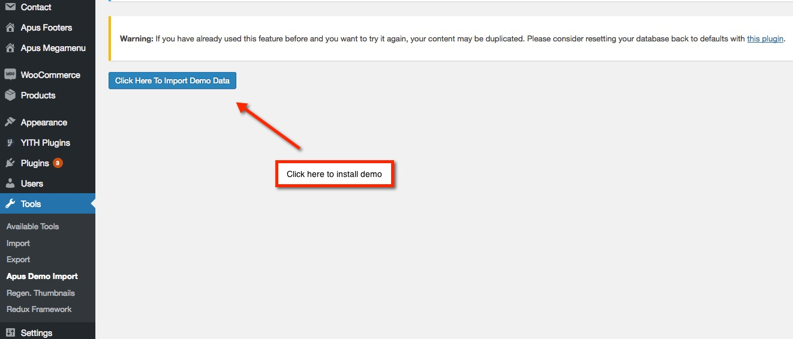
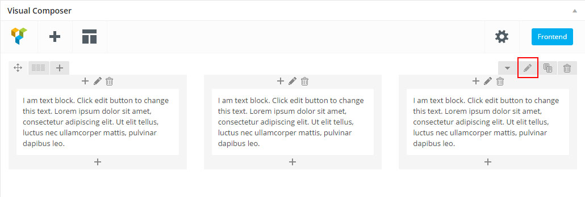
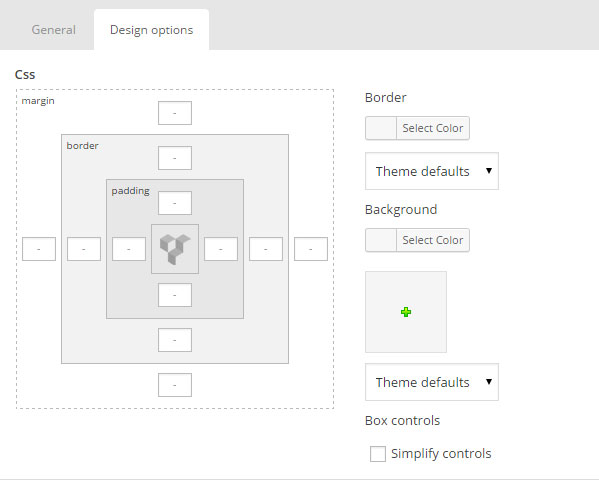
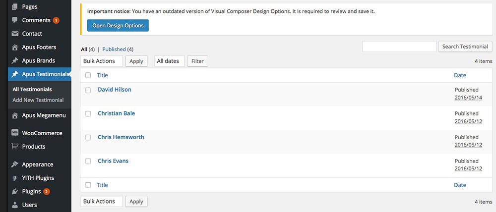

Famita
Minimalist WooCommerce WordPress Theme
Firstly, we would like to thank you for purchasing Famita - Minimalist WooCommerce WordPress Theme and chosen it for your website. We outline all kinds of good information, and provide you with all the details you need to use the Wordpress theme.
If you are unable to find your answer here in our documentation, feel free to ask for help from our support team: http://support.apusthemes.com/.
If you like this theme, Please support us by rating us 5 stars.
- by: ApusTheme
Install Theme
Download packages
Purchase Famita theme from ThemeForest then you can download our template package on there.
Extract package that include all files and folders of theme. When done, you should see Famita_theme.zip (zip file name can be changed from version to version).

Once the download is complete, unzip the file and you would see the following packages:
- Guides - our detail documentation for the theme
- Theme folder - for manual installation
- Samples - the sample data of the demos, you can import it
- PSD - the PSD files of the theme
- Licensing - the theme license
System Requirements
When selecting a hosting service, you should check to see that these server requirements are provided and installed on their web servers:
- PHP version 5.6 or greater
- MySQL version 5.6 or greater
Theme Installation
There are 2 ways to install a Wordpress theme.
Installing Theme From the WordPress Dashboard
- Step 1: Navigate to Appearance → Themes in your WordPress admin dashboard.
- Step 2: Click the Add New button at the top of the page and go for the Upload option.
- Step 3: Choose Famita_theme.zip then click Install
- Step 4: Wait while the theme is uploaded and installed then activate the theme.
Install theme via FTP
Many users are on shared hosting with low upload limits, and in such situations the Famita theme is often too large to install through Wordpress. We suggest you should upload it via FTP.
If you don't know how to use FTP visit this link for information: http://codex.wordpress.org/FTP_Clients . You will need to first uncompress the PACKAGE-theme.zip file you have found in the master zip downloaded from Themeforest. This zip uncompresses into a normal folder. This unzipped folder is all you need to transfer via ftp and if you open it, you will see all sorts of folders and css and php files which together contain all the theme coding.
Using the FTP program transfer this folder which contains the above files to the Wordpress installation theme root directory: /wp-content/themes.
Do not upload any of the other files or folders such as licensing or resource or documentation. Uploading any of the other folders may cause problems resulting in the theme not working properly. Learn from Wordpress Official Documentation about installing theme with FTP client or with cPanel: http://codex.wordpress.org/Using_Themes
Activate Famita as default theme
After completing the upload, activate the theme as per activating any other theme.
Go to your Dashboard >> Appearance >> Themes >> Activate Famita template
Known problems when installing the theme
a. The “Broken theme and/or stylesheets missing” error is most common when you install or activate a new theme.
If you get an error saying that the stylesheet is missing, then you have uploaded the wrong folder. Please check that you are uploading the Famita_theme.zip within the Theme Files folder. You have to unzip the package file that you download from Themeforest to find this.
b. Problems with uploading via WP admin panel due Upload limit.
You may check your file upload limit on Your Media Uploader page in WordPress. Depending upon the web hosting company and the conditions of the service they provide it may vary. The most common is about 8 MB which is more or less enough. But uploading some media files like audio and video may become a problem with for example 2 MB upload limit.
We decided to share some tips about how to extend your maximum file upload size in WordPress:
1. Through functions.php file:
You may add the below mentioned code in the functions.php file of your theme
@ini_set( 'upload_max_size' , '64M' ); @ini_set( 'post_max_size', '64M'); @ini_set( 'max_execution_time', '300' );
2. Through PHP.INI file:
If you cannot see the php.ini file in your directory create the new one with below mentioned code and upload it to your root folder on your web server.
If you can see the php.ini file then change parameters or add :
upload_max_filesize = 64M post_max_size = 64M max_execution_time = 300
In case that tip does not work with 64MB, try it with 10MB.
3. Through .htaccess method
You may try modifying the existing .htaccess file in the root directory or creating a new one.
Add the following code in the existing or new .htacess file:
php_value upload_max_filesize 64M php_value post_max_size 64M php_value max_execution_time 300 php_value max_input_time 300
You can reset all of the setting for the each page on our custom panel by clicking “Reset” button on the bottom.
Plugins Installation
Right after the theme was activated, a notification at the top of the screen will suggest to continue with the installation of the plugins recommended for getting the best our of your theme.
Follow the installation steps below:
Step 1. Click ‘Begin installing plugins‘ and select the plugins you need to install from the list.
Step 2: Select all plugins then choose Install , Click Apply to install all plugins
- Plugins Using in Famita theme
- Apus Framework for themes: Implement rick functions for themes base on apus framework and load widgets for theme used.
- Cmb2 : Create custom meta boxes and custom fields for any post type in WordPress.
- Contact Form 7: Allow you create contact forms on Contact Page.
- MailChimp for WordPress: to use newsletter function
- Revolution Slider: premium responsive slider.
- WPBakery Visual Composer: powerful visual composer to create page layout.
- WooCommerce: The Shop engine for your WordPress site.
- WooCommerce Variation Swatches: Variation Swatches plugin
- YITH WooCommerce Wishlist: Wishlist plugin
- WooCommerce Quantity Increment: Quantity Increment for product detail
Step 3: After Installing all Plugins, select Activate then click Apply to active all plugins.
Install Data Demo
Step 1: Navigate to Tools > Apus Demo Import.
Step 2: Click on Download Demos.
Step 3: Click on Click Here To Import Demo Data

Theme Configuration
Set Up Logo
You can upload your logo image in the Famita Options. If the logo is not uploaded, then your site name will be used.
Please, follow the steps below to upload your logo:
Step 1 - Login to your WordPress Dasrdoard.
Step 2 - Go to Famita Options > Header Tab
Step 3 - Upload your logo by clicking on Select Image ( our current Famita logo is 150px x 50px ).
Step 4- Upload your favicon - should be a 32px x 32px Png/Gif image.
Set Up Menu
1. Creating your menu
Step 1- Login to the WordPress Dasrdoard. Step 2- From the 'Appearance' menu on the left-hand side of the Dashboard, select the 'Menus' option to bring up the Menu Editor.

Step 3 - Select Create a new menu at the top of the page.
Step 4 - Enter a name for your new menu in the Menu Name box.
Step 5 - Click the Create Menu button. Your menu is now defined, and you can now add pages to it (steps below).
2. Adding pages to your menu
Step 1 - Locate the pane entitled Pages.
Step 2 - Within this pane, select the View All link to bring up a list of all the currently published Pages on your site. Step 3 - Select the Pages that you want to add by clicking the check box next to each Page's title. Step 4 - Click the Add to Menu button located at the bottom of this pane to add your selection(s) to the menu that you created in the previous step. Step 5 - Click the Save Menu button once you've added all the menu items you want. Your custom menu has now been saved. 
The Screen Options allow you to choose which items you can use to add to a menu. Certain items, like Posts or Products are hidden by default. The Screen Options are located in the top right corner of your WordPress Dashdoard.
3. Setup Megamenu
Step 1- Login to the WordPress Dasrdoard.
Step 2- Go to Admin Dashboard > Apus Megamenu. to create a megamenu profile (using Visual Composer to build layout)
Step 3- From the 'Appearance' menu on the left-hand side of the Dashboard, select the 'Menus' option to bring up the Menu Editor.
Step 4- Add megamenu profile to menu item
4. Assigning a Menu to a Location
Once you've created a menu and filled it with items, it's time to assign it to one of the theme pre-defined locations.
- Go to Appearance > Menus and click Manage Locations.
Menu is assigned after import data by "One click import".
Front end look like
Menu Home will be displayed.

Set Up Home Page
You can quickly build a home page using Visual Composer for WordPress that is drag and drop frontend and backend page builder plugin that will save you tons of time working on the site content. You will be able to take full control over your WordPress site, build any layout you can imagine – no programming knowledge required
From your Dashboard admin Navigate to Pages
- Select All Pages to see all page then click edit one page you want
- Select Add New to create new page
A. How to use Visual Composer
Have you ever used Visual Composer ? Please follow that guide first : Visual Composer guide
Official Plugin Documentation For More information about the Visual Composer check the official documentation.
Watch video about Visual Composer
1. Classic Mode.
You can insert code on table then Home page will be created automatically.
2. Backend Editor Mode
Drag and drop elements you need to build your page layout.
How to use Back End Mode
a. Add and modify Row Layout
Step 1 - Go to your page / post, first activate the backend editor and click Add Element

Step 2 - Select the Elements you want to use.

Step 3 - Click on the Edit This Row (pencil icon) to Edit the Row element ( in our example we use row with 3 columns filled with text block )

Step 4 - To change the Row layout ( number of columns ) you need to click the second Icon from the left then select a layout or custom to make your own

b. Edit Element
Pencil Icon - To Edit Row, Column or Module you need to click the Pencil icon.
c. Duplicate Element
Pages Icon - To Duplicate Row or Module you need to click the Pages icon.

d. Remove Element
Trash Box Icon - To Remove Row, Column or Module you need to click the Trash Box icon.

e. About Row / Column / Custom heading / Text Block Design options
Design Options - When you edit row / column / custom heading / text block module, you can edit the design options

Row / Custom Heading / Text Block element have a default Bottom Margin of 35 pixel, you may want to set it to 0 if you don't want to have bottom space

It is Good to add bottom Padding to your Column, so they will looks good on mobile
Left and Right Margin should NEVER be modified, please left blank
For Row module the Left and Right Padding should also NEVER be modified, please left blank

3. Page Options
a. Page Attributes
You can select page attributes on right sidebar of page admin layout. Each Page templates have each styles
b. Page configure default template
For each page you can change the page layout style, header skin, footer skin and much more! Check the screenshot and read the documentation to see how it works
- Enable Fullwidth Layout - Select if you want the page to have a Fullwidth layout.
- Header Layout - Select skin specific for Header on page or use Global
- Footer Layout - Select skin specific for Footer on page or use Globalsidebar.
- Disable Breadcrumbs - Select if you want to disable the subtitle and breadcrumbs.
- Breadcrumbs Text Color - Select color for text of breadcrumbs.
- Breadcrumbs Background Color - Select color background for breadcrumbs.
- Breadcrumbs Background - Select image to set background.
- Layout Style - Select style for page to have a Auto, Left-Main Sidebar or Main-Right Sidebar or Left-Main-Right Sidebar.
Famita Home Page Layout
Famita come with more than 5 home page layout. Please check out landing page to know more and build your home page you need.
1. Home 1
C. Set a page as Home Page
Step 1 - Go to Settings > Reading in your WordPress Dashboard panel.
Step 2 - Set "Front page displays" to a "Static Page".
Step 3 - In the drop down menu for "Front Page" choose a page which will be your home page.
Step 4 - Leave the drop down menu for "Posts page" empty, as this is not used by the theme.
Step 5 - Save changes.

Set Up Blog Page
1. Create the blog post
Step 1 - Log in to your WordPress Administration Panel (Dashboard)
Step 2 - Click the 'Posts' tab.
Step 3 - Click the 'Add New' sub-tab.
Step 4 - Start filling in the blanks: enter your post title in the upper field, and enter your post body content in the main post editing box below it.
Step 5 - As needed, select a category, add tags, post format, fill in the meta setings below the editor.
Step 6 - Upload a featured image for your Post.
Step 7 - Select Post Format. You can create blog post with a lot of Formats like link, gallery, image ..... Select format on Format box from in right sidebar
Step 8 - Scroll down until you see the Post Configuration box, there you will be able to customize the post.
Step 9 - When your post is ready, click Publish.
2. Manager current all blogs
Navigate to Posts → All Posts
You can see all informations of you blog post, add new, edit or delete them.
3. Create Blog Page
Option 1. Create Blog Page with Visual Element
Step 1 - Log in to your WordPress Administration Panel (Dashboard)..
Step 2 - Click on Pages > Add New.
Step 3 - Give your page a name then Change the Editor to Backend Editor ( you need to have the Visual Composer plugin activated ).
Step 4 - Click on the Add Element button
Step 5 - Select the Apus New Elements.
Front end look like :
Option 2. Create Blog page with Blog template
Step 1 - Log in to your WordPress Administration Panel (Dashboard)..
Step 2 - Click on Pages > Add New.
Step 3 - From Page Attribubtes -> Select Template : Blog.
Step 4 - Set up Page configuration
- Page Layout - Select if you want the page to have a Right Sidebar / Left Sidebar / No Sidebar.
- Left Sidebar - Select your sidebar content will be displayed when you choose page with left sidebar.
- Right Sidebar - will be display when you select page layout with right sidebar.
- Sidebar Columns - Select columns of sidebar.
- Layout Style - Select style for page to have a Full width, Boxed or use Global.
- Header Skin - Select skin specific for Header on page or use Global.
- Footer Skin - Select skin specific for Footer on page or use Global.
- Show Breadcrumbs - Select if you want to show the subtitle and breadcrumbs.
4. Blog Global Configure
Step 1 - From your admin Dashboard navigate to : Apperance > Customize > Blog
Step 2 - Set up Archive & Category Setting.
You can set Global (default) layout for archive blog page and category blog post then select content sidebar to display

Step 3 - Set up Single Post Setting
- Show share post : enable or disable share post function
- Show related post : enable or disable related post
- Number of post to show : select number of related post to show
- Single blog layout : Select layout for single blog.
Set Up Footer
Set Up Apus Footer
Step 1 - From admin Dashboard, navigate to Apus Footer > Add Profile Footer
Step 2 - Using Visual Composer backend editor mode then add element to your Footer

Step 3 - Build your footer style with unlimited layout
Footer layouts for you.
Footer 1.
Front end look like :
Visual Element Layout setting
Step 4 - After create your footer profile. Navigate to : Apperance > Customize > Theme And Layout Setting.
Choose your footer for page.
*********** If you want specific Footer for one of your pages. Please go to your page configuration. Select Footer version you want to display only on that page.
Create Testimonials
Step 1: Go to Apus Testimonial from Dashboard then create content of Testimonials

Step 2: Drag Apus Testimonial elements by using Visual Composer on page you want to display testimonials.
You can choose some setting like title, skin ....
Create Contact Page
1. Create Contact Form.
Make sure you install and active Contact Form 7 plugin to continue reading.
Step 1 - Log in to your WordPress Dashboard, go to Contact > Add New

Step 2 - Give a Name to your form and change Mail Info
Step 3 - Edit the Form field to change the Form Layout
2. Create Contact Page
Step 1 - Log in to your WordPress Administration Panel (Dasrdoard)..
Step 2 - Click on Pages > Add New.
Step 3 - Give your page a name then Change the Editor to Backend Editor ( you need to have the Visual Composer plugin activated ).
Step 4 - Click on the Add Element button

Step 5 - Select the Contact Form 7 element.
Step 6 - The Contact Form 7 Settings should appear. Select the Form you want to use you can also customize the Color and change the fields layout and button design
Step 7 - Update / Publish your page
Theme Options
Famita Theme use Customizer provides an ultra effective and intuitive way to customize theme layout & setting with real-time preview. Bring all of settings to customizer, you do not need to using another theme option anymore
To access Customizer go to your admin Dashboard Navigate to Admin >> Charityplus Options
1. General Setting : Manage general setting like your logo,favicon, copyright, ....
2. Header Setting: select your header style
3. Footer Setting : footer style for global
4. Blog Setting : manage global setting for Blogs
5. WooCommerce Setting: manage global setting for Woocommerce
6. Style : custom style
7. Socials Media : select social channel apperance to sharing
8. Custom CSS/JS : Custom CSS/JS
How to translate the theme
The easiest way to translate theme to the language of your choice is to use "WPML" plugin.
- To begin, be sure you have the WPML Plugin installed and activated, along with the WPML String Translation plugin.
- To set up WPML the first time, follow their Getting Started Guide.To begin translating, select WPML (in the Dashboard menu) -> String Translation. You should see a list of the strings in the theme (there should be only four), with blue translation links to the right. Click these links to reveal the list of languages you use on your blog and the associated translations.
- How to set and translate main features of the theme
- Using translation management http://wpml.org/documentation/translating-your-contents/using-the-translation-editor/
- Translation Management & Features – http://wpml.org/documentation/translating-your-contents/using-the-translation-editor/translation-management-features/
- Translating URL slugs – http://wpml.org/documentation/getting-started-guide/translating-page-slugs/
- How to scan strings coming from the theme
- http://wpml.org/documentation/getting-started-guide/theme-localization/
- How to translate strings using String Translation
- http://wpml.org/documentation/getting-started-guide/string-translation/
- If adjustment is needed for WPML language switcher please also add this
- http://wpml.org/documentation/getting-started-guide/language-setup/custom-language-switcher/
- If you need more help with WPML plugin. Please go WPML Forum
FAQs
1. How to update Theme
a. Update Theme via WordPress
Updating the theme via WordPress is very similar to the install process via WordPress. Make sure you had backup all of your customization in our theme.
Follow the steps below to update your theme via WordPress:
Step 1 - Download latest theme package on ThemeForest
Step 2 - Log into your WordPress Dashboard.
Step 3 - Go to Appearance > Themes.
Step 4 - Deactivate the Famita Theme by simply activating a different theme. Once you activate a different theme, you can delete the Famita theme.
Step 5 - Delete the Famita Theme. Do not worry, your content will not be lost!
Step 6 - Then simply upload the newest “Famita_theme.zip” file in the Appearance > Themes section. Click on the Install Themes tab at the top and choose to upload the zip file. You have this step explained in section: Theme Installation via WordPress.
b. Update theme via FTP
Updating the theme via FTP is very similar to the install process via FTP.
Follow the steps below to update your theme via FTP:
Step 1 - Go to .../wp-content > themes location on your server using a FTP client and backup your "Famita" theme folder by saving it to your computer, or you can choose to simply delete it. Your content will not be lost.
Step 2 - Download the new version of Famita theme from your Themeforest and retrieve Famita folder by unpacking the zip that you download from Themeforest and Famita_theme.zip.
Step 3 - Then simply drag and drop the new "Famita" theme folder into .../wp-content > themes location. Choose to “Replace” the current one if you did not delete it.
Step 4 - Log into your WordPress Dasrdoard, go to Appearance > Themes and activate the new Famita theme.
2. How to create Child Theme
What is a Child Theme?
A child theme is a theme that inherits the functionality of another theme, called the parent theme. Child themes allow you to modify, or add to the functionality of that parent theme. A child theme is the best, safest, and easiest way to modify an existing theme, whether you want to make a few tiny changes or extensive changes. Instead of modifying the theme files directly, you can create a child theme and override within.
Why use a Child Theme?
if you modify an existing theme and it is updated, your changes will be lost. With a child theme, you can update the parent theme (which might be important for security or functionality) and still keep your changes. It’s a great way to get started if you are just learning WordPress theme development.
How to create Create child ?
Follow that documentation to create Child Theme Child Themes - Codex
Using that plugin to create Child Theme : One Click Child Theme
3. How to Speed Optimization
If you think your website takes too much time to load maybe you should.
- Install a Cache Plugin for WordPress. We recommend W3 Total Cache.
- Install an Image Compress Plugin. We recommend WP Smush It.
- Install a Database Optimizer Plugin We recommend WP Optimize
- Reduce the number of posts on the page
- Reduce the number of unnecessary plugins.
- Use more icons and less images.
4. How To Enable the Registration Form on the ‘Login/My Account’ page?
In case you cannot see the Registration Form on the My Account page or checkout page, it means you need to enable it.
You can find this setting by navigating to WooCommerce >> Settings.
Open Account Tab In the Registration section, make sure the" Enable registration on the "Checkout" page" and “Enable registration on the “My Account” page” options is checked.
This is what you should be seeing on your screen:
5. How To Add Color/Size selection box on the product page?
In WooCommerce, you can define product attributes, such as size or color, to use be used as product options.
Start by navigating to Products → Attributes.
For example an attribute could be “Size“. Then you need to Configure its terms. Those would be “Small, Medium, Large“.
Once defined, these global attributes can be assigned to your variable products.